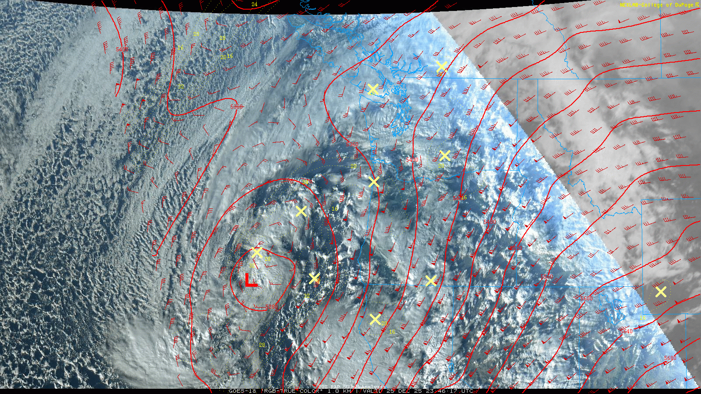
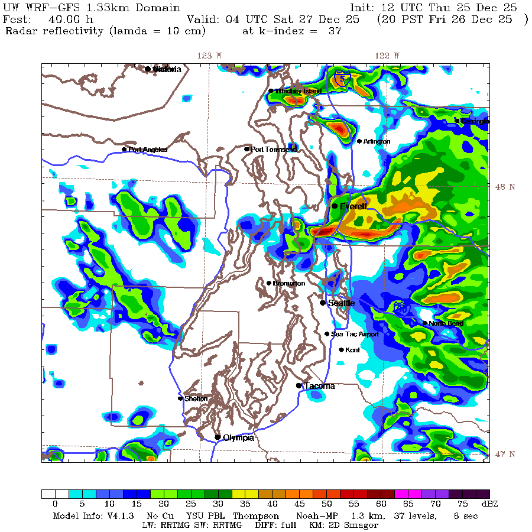

🎁A Boxing Day miracle! A shortwave trough provides a pre-weekend refressher to the snowpack
Welcome to The Dendritic Growth Zone!
🧙♂️ Forecast Discussion
Short-term (Friday-Sunday)
Happy holidays from the Cascade Mountain Weather team! As a low pressure system spins off our coastline and lifts a front over the region, mountain snow and freezing levels around 2,500 to 3,500 feet will continue into Friday. As that low weakens and pushes off to our east, a special post-Christmas treat will descend from the North. Although Rudolf and his fellow reindeer were a little late, they will usher along a nice belated gift: a shortwave trough that comes down off the coast of British Columbia midday Friday. This feature will drop snow levels to well below 2,000 feet towards Friday night, with moderately gusty winds. Lowland snow below 1,000 feet is also possible in certainly areas north of Seattle. Recent UW WRF model runs have shown a signal for the Puget Sound Convergence Zone (PSCZ) to set up near the hours of 6pm and 10pm Friday night. This will bring enhanced snowfall rates and even lower snow levels for the areas north and south of US 2. While the exact location and intensity can vary dramatically, this setup is always fun to have as it can bring the best chance for lowland snow in some areas. Models have hinted at this setup to bring around 10-15" of new snow to much of the region on the western slope of the Cascades. Certain areas in the central Cascades could see more with high snowfall rates Friday evening.

After this shortwave passes through, we will transition to a drier period as a high pressure ridge builds from the west. Initially this will drop freezing levels will drop further towards sea level on Saturday and Sunday. Skies will begin to clear although this is a great setup for mountain inversions to form. Keep an eye on valley bottom temperatures and satellite imagery for signs of this. East flow may also set up as the cool air to the east pools and is realesed through the Passes. As the weekend comes to a close, warmer air will begin to come into the region as the ridge takes a stronger hold.
Medium-Term (Monday-Wednesday)
The ridge and associated stable air will stay in place for much of the week, helping to keep the atmospheric river fire hose pointed to our north. There is decent model agreement that this ridge will break down and usher in another round of atmospheric rivers to our region. Hopefully they can remain cooler and ring in the new year in the white way!
🧙🔮🧙♂️ Reading the crystal ball - 7+ day outlook
There is decent model agreement that conditions will be slightly warmer and wetter than normal for the 7+ day period. This outlook emphasizes the importance of accurate snow level forecasts as even a small shift in freezing levels can have a large impact on snow accumulation totals in this near term period. The next week will bring this uncertainty into a clearer focus.

❄️ Snowfall
Weekend Snow Accumulation Forecast
| Site | Through 4am Saturday | Through 4am Sunday | Weekend Snow Accumulation (4pm Thursday through 4am Monday 22 Dec) |
|---|---|---|---|
| Mt. Baker (4500') | 8-12" | 8-12" | 8-12" |
| Washington Pass | 3-6" | 3-6" | 3-6" |
| Stevens Pass (4500') | 12-18" | 12-18" | 12-18" |
| Hurricane Ridge | 5-8" | 5-8" | 5-8" |
| Blewett Pass | 6-10" | 6-10" | 6-10" |
| Snoqualmie Pass | 10-16" | 10-16" | 10-16" |
| Crystal (5000') | 8-12" | 8-12" | 8-12" |
| Paradise | 12-14" | 12-14" | 12-14" |
| White Pass (5000') | 6-12" | 6-12" | 6-12" |
🧊 Freezing Level
- Friday: 1000-3000 feet
- Saturday: 0-1000 feet
- Sunday: 3000-6000 feet, above inversions
🎿 Our Recommendations
Best Choice This Weekend: Snoqualmie Pass
Snoqualmie Pass will likely see a nice dose of fresh snow and potentially some PSCZ activity if it sets up further south. Given the high accessibility that is available and the improved travel conditions, solid conditions should be found. Saturday will be chilly, but likely a beautiful day to be out.
Runner-Up: Crystal Mountain
This shortwave setup has the potential to bring some extra snowfall to the Crystal area, although it has to set up just right to come up the White River basin. With enhanced access to the area, it could be worth it to check if conditions are better than anticipated.